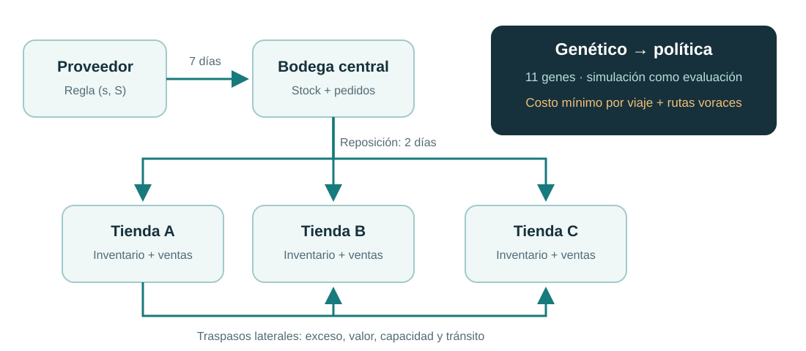
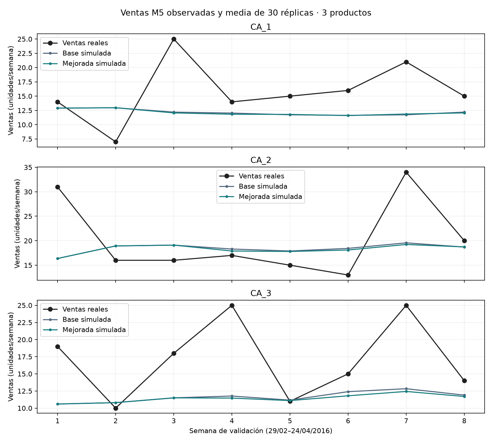
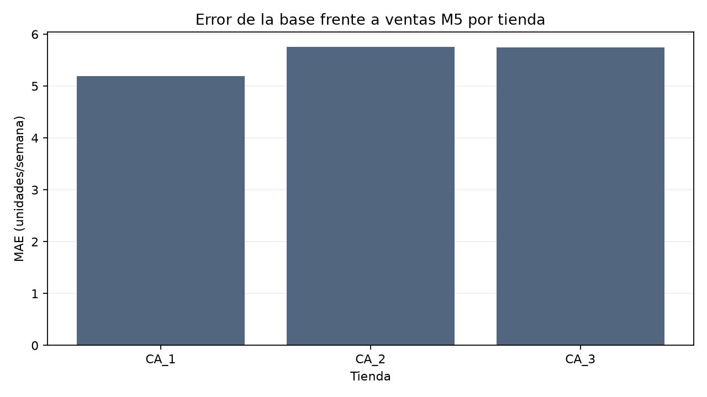
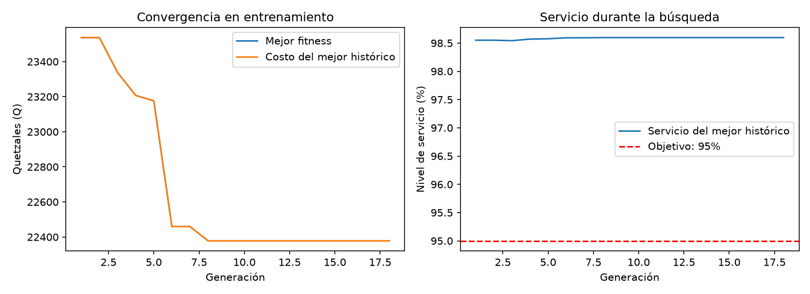
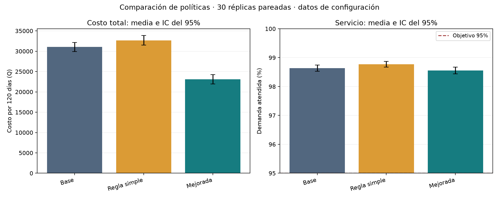
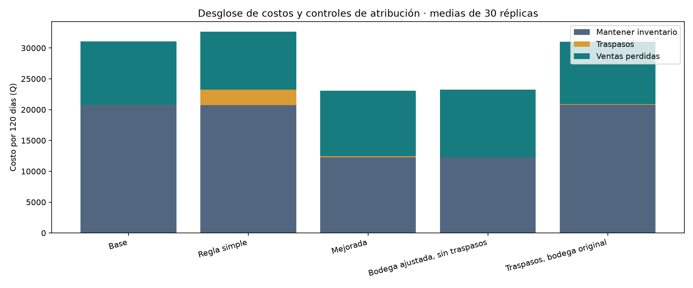
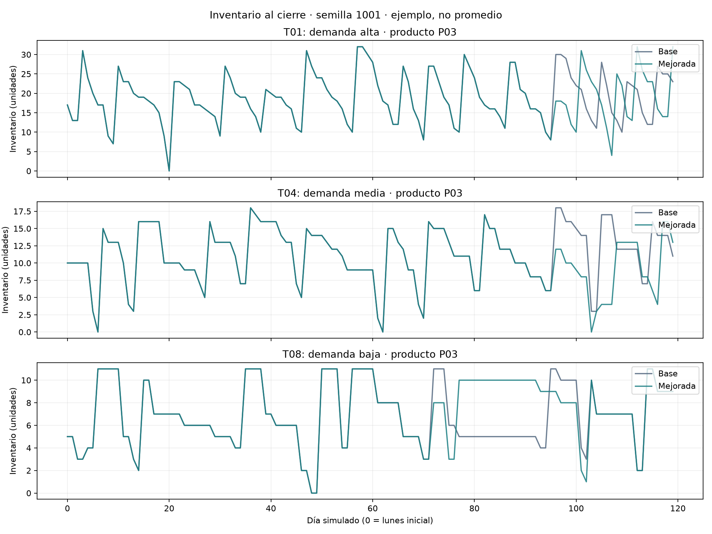
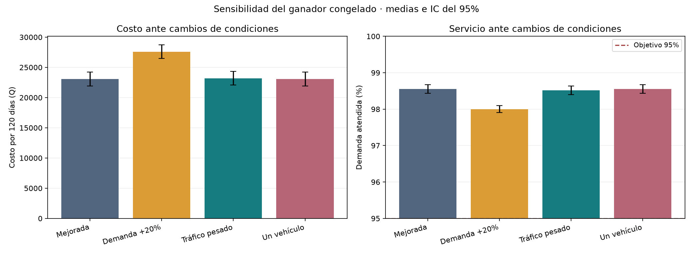

Universidad del Valle de Guatemala
Facultad de Ingeniería
Modelación y Simulación
Traspasos de inventario
entre tiendas
- Javier Alejandro Chávez León — 23132
- Daniel Adolfo Sarmiento Peralta — 231105
- Sofía López Ayerdi — 231929
- Karen Ximena Toledo Juárez — 23692
- Luis Francisco Padilla Juárez — 23663
Guatemala, 10 de noviembre de 2026
Estudio sintético y contraste externo con ventas M5.
Alcance de cierre: prototipo reproducible, comparación sintética y contraste externo de ventas públicas M5. La referencia pública reemplaza la referencia empresarial no disponible para este estudio; no representa ni valida la operación de Walmart o de una cadena concreta. Este es el único documento maestro; sus versiones HTML y PDF se generan a partir de este archivo.
Resumen
Se desarrolló un modelo de simulación diaria de inventario para una cadena de tiendas abastecida desde una bodega central. El modelo representa demanda aleatoria, ventas perdidas, reposición mediante reglas (s, S) y traspasos entre tiendas. La mejora propuesta ajusta los parámetros de una política de traspasos mediante un algoritmo genético con reparación de restricciones, evaluación por réplicas y reevaluación de candidatos. Un flujo de costo mínimo selecciona la carga de cada viaje, mientras una heurística voraz selecciona las rutas.
La ejecución disponible utiliza datos sintéticos de 10 tiendas, una bodega, 3 productos y un horizonte de 120 días. El genético, con 30 individuos y hasta 50 generaciones, terminó en la generación 18 por estancamiento. El ganador alcanzó un costo promedio de Q23,074.24 y un nivel de servicio promedio de 98.56% en 30 réplicas con semillas independientes de las usadas para seleccionarlo.
Un estudio posterior, sin reentrenamiento, comparó ocho condiciones con 30 réplicas cada una. Frente a la base, la política mejorada redujo el costo promedio en 25.68%, pero aumentó las unidades perdidas en 6.03% y disminuyó el servicio en 0.0816 puntos porcentuales. La prueba pareada confirmó la reducción de costo; los controles mostraron que el ahorro proviene principalmente del ajuste de bodega, sin evidencia estadística suficiente de ahorro incremental por los traspasos. Con demanda +20% y existencias de referencia constantes, el costo aumentó 19.54% respecto a la mejorada nominal. Estos hallazgos corresponden al sistema sintético; el contraste parcial M5 y sus limitaciones se presentan en los apartados de validación y comparación real. La fuente M5 se reprodujo y verificó, y la mejorada obtuvo MAE 5.61 frente a 5.56 de la base, sin traspasos y con servicio simulado de 94.51%. La conclusión externa es de correspondencia limitada, no de validación operativa favorable.
Palabras clave: inventario, traspasos laterales, simulación, algoritmo genético, restricciones, flujo de costo mínimo.
Contenido: Problema · Objetivos · Fuentes · Técnica investigada · Modelo · Implementación · Diseño experimental · Validación · Comparación real · Resultados · Limitaciones · Conclusiones · Referencias · Contribuciones.
1. Problema
1.1 Contexto y planteamiento
La demanda de un producto no es uniforme entre los puntos de venta de una cadena. Una tienda puede agotar sus existencias mientras otra conserva unidades que tardarán en venderse. Si cada tienda depende exclusivamente de reposiciones desde bodega, el inventario disponible en otros establecimientos no se aprovecha para responder a esos faltantes.
Los traspasos laterales trasladan unidades entre tiendas del mismo nivel de la red. Pueden evitar ventas perdidas, pero introducen costos de viaje y el riesgo de dejar sin existencias al donante. Por ello, no basta con mover productos de una tienda con más inventario a otra con menos: debe evaluarse si llegarán a tiempo y si el beneficio esperado compensa el costo y el riesgo.
El proyecto estudia esta decisión mediante simulación y optimización. Usa dos fuentes de evidencia separadas: un contrato sintético para optimizar y comparar, y ventas públicas M5 para contrastar ventas fuera de la calibración. La cadena empresarial contemplada al inicio no aportó datos al repositorio; se cierra el estudio con la referencia pública, declarando el cambio de alcance.
1.2 Pregunta de investigación
¿Cuánto se reducen el costo total y las ventas perdidas de la cadena si los traspasos entre tiendas se deciden con una política optimizada, en lugar de depender solo de la reposición desde bodega?
1.3 Alcance
Se incluyen una bodega, múltiples tiendas y productos, demanda semanalmente estacional, pronóstico simple, reposición (s, S), transporte e inventario en tránsito, costos y ventas perdidas. La ejecución disponible considera 10 tiendas, 3 productos y 120 días, dentro del tamaño sugerido en el plan.
No se modelan precios variables, sustitución entre productos, pedidos de clientes pendientes, retornos de vehículos ni rutas con varias paradas. Cada vehículo puede hacer como máximo un viaje directo por día. La reposición sigue una regla (s, S); sus parámetros de bodega forman parte del cromosoma, por lo que su ajuste debe distinguirse del efecto exclusivo de los traspasos.
2. Objetivos
2.1 Objetivo general
Evaluar, mediante simulación, el efecto de una política de traspasos cuyos parámetros se ajustan con un algoritmo genético sobre costo, servicio y faltantes, distinguiendo el desempeño sintético de su correspondencia externa con ventas observadas.
2.2 Objetivos específicos y evidencia de cumplimiento
| Objetivo | Evidencia de cierre |
|---|---|
| Representar inventario, demanda, ventas y reposición | Motor diario, balances y pruebas |
| Formular costos e indicador económico | Transporte, cobertura, reserva y V documentados |
| Respetar restricciones de inventario y transporte | Políticas, validaciones y auditorías por réplica |
| Optimizar una política con restricciones | 11 genes, reparación, réplicas y reevaluación |
| Comparar políticas y sensibilidad | 240 réplicas, controles, IC y pruebas pareadas |
| Contrastar ventas contra una referencia real pública | M5: calibración separada, 60 réplicas y errores fuera de muestra |
El último objetivo se limita expresamente a ventas. La validación de inventarios, costos y operaciones reales queda como trabajo futuro, porque esas variables no están observadas en las entradas utilizadas.
3. Fuentes
3.1 Datos y procedencia
| Fuente | Contenido y uso | Naturaleza |
|---|---|---|
data/synthetic/ |
10 tiendas, 3 productos, medias semanales y clases para optimización | Sintética, semilla 20261109 |
| Kaggle M5, copia pública de Nixtla | Ventas diarias y calendario para contraste externo | Observaciones reales de ventas |
config.yaml |
Costos, capacidades, distancias aproximadas y reglas de reposición | Estimaciones y supuestos |
| Resultados y manifiestos | Métricas, semillas, versiones, código y entradas verificadas | Evidencia generada por el modelo |
M5 se obtiene de la competición original y de su copia pública, citadas en
Referencias. Se seleccionaron CA_1–CA_3 y FOODS_1_001–003. No se incorporó
el ZIP al repositorio; se conservan su URL, receta y SHA-256
cc704ba15d6802f8262e6ec7d4c6041e4ad6366a94365e8c84f721e450eed774.
El ZIP se descargó de nuevo y sus resultados se reprodujeron exactamente.
3.2 Separación entre observación y supuesto
Las ventas M5 no son demanda total, inventario, costos ni rutas observadas. Las coordenadas usadas por el simulador son hipotéticas en Guatemala y no describen las ubicaciones de las tiendas de California. Los márgenes en Q y las reglas (s, S) son supuestos compartidos del prototipo. No se convierten ventas de Walmart en un supuesto costo real en quetzales.
No se dispone de una fuente empresarial propia ni de todos los parámetros operativos reales. Se documenta esta ausencia como límite del alcance, sin rellenar los campos desconocidos con ceros ni presentar el modelo como una réplica de la operación real.
4. Técnica investigada
4.1 Selección de un algoritmo genético
Los parámetros de una política de inventario interactúan de forma no lineal: una mayor reserva protege al donante, pero reduce la cantidad transferible; un umbral económico alto evita viajes poco rentables, pero puede dejar demanda sin atender. Las evaluaciones contienen ruido porque la demanda es aleatoria.
Un algoritmo genético permite explorar una representación mixta de enteros y reales utilizando el simulador como evaluador, sin requerir derivadas del costo. Eiben y Smith (2015) presentan la representación, selección, recombinación y mutación como componentes configurables de los algoritmos evolutivos. En este proyecto el cromosoma describe una política reutilizable y no una lista de todos los movimientos diarios, lo que limita la dimensión de búsqueda.
4.2 Manejo de restricciones
Deb (2000) estudia el manejo de restricciones en algoritmos genéticos y la distinción entre factibilidad y calidad. Nuestra implementación combina reparación y penalización; no implementa las reglas específicas de selección por factibilidad propuestas por ese autor.
Se distinguen dos niveles:
- Política válida: genes dentro de sus rangos, valores enteros donde corresponde, S de bodega mayor o igual que s y horizontes compatibles con el pronóstico.
- Acciones válidas: envíos limitados por exceso y capacidad, reserva de exhibición, inventario no negativo y conservación durante el tránsito.
El objetivo de 95% de servicio se trata como una restricción blanda sobre el promedio de réplicas: incumplirlo aumenta el fitness, pero no invalida automáticamente al candidato ni garantiza 95% por tienda o producto.
4.3 Optimización mediante simulación y evaluación ruidosa
Amaran et al. (2016) describen la optimización mediante simulación como la búsqueda de decisiones cuyo desempeño se obtiene evaluando un modelo. Aquí la función objetivo se estima con réplicas y no se conoce de forma cerrada.
Para un candidato , se minimiza:
se expresa en quetzales y como fracción entre cero y uno. Un déficit de 0.01 en servicio promedio agrega Q1,000 al fitness. El valor de la penalización es un supuesto del equipo, no una calibración económica real.
Se emplean las mismas semillas de demanda para comparar candidatos durante el entrenamiento. Los cinco mejores genotipos distintos se reevalúan con semillas adicionales y el ganador se evalúa con un tercer conjunto independiente. Esto reduce el riesgo de seleccionar una política por una realización favorable.
4.4 Extensión y fundamento bibliográfico
La extensión del genético visto en clase combina reparación, evaluación con réplicas y números aleatorios comunes, reevaluación de finalistas e integración con el simulador y el flujo de costo mínimo. Se describe la extensión realmente implementada; la documentación no presupone una aprobación académica externa.
| Fuente | Aporte al enfoque |
|---|---|
| Eiben y Smith (2015) | Representación, operadores y administración de población |
| Deb (2000) | Fundamento del manejo de restricciones y factibilidad |
| Amaran et al. (2016) | Marco de optimización con evaluaciones de simulación |
Estas referencias sustentan el enfoque general, no demuestran que la población, rangos o penalización elegidos sean óptimos para esta aplicación.
5. Modelo

Esquema del sistema. La reposición de proveedor y bodega coexiste con los traspasos entre tiendas. El genético ajusta reglas; no programa cada envío.
5.1 Conjuntos, estados y decisiones
Se consideran tiendas , productos , una bodega y días . Cada tienda pertenece a una clase de demanda .
| Símbolo | Descripción | Unidad |
|---|---|---|
| Inventario disponible en tienda | Unidades | |
| Inventario disponible en bodega | Unidades | |
| Llegadas programadas a tiendas | Unidades | |
| Llegadas programadas a bodega | Unidades | |
| Demanda real de una réplica | Unidades/día | |
| Pronóstico de demanda futura | Unidades/día | |
| Unidades vendidas | Unidades/día | |
| Unidades de demanda perdida | Unidades/día | |
| Cantidad enviada entre tiendas | Unidades | |
| Distancia vial estimada | km | |
| Margen no obtenido por unidad perdida | Q/unidad |
La política observa inventario, llegadas comprometidas, pérdidas acumuladas y pronóstico después de las ventas del día. No recibe las realizaciones futuras de demanda utilizadas por el motor.
5.2 Datos, parámetros y procedencia
Los CSV sintéticos contienen 10 tiendas y 210 registros de demanda: una fila por tienda, producto y día semanal. La clase de tienda se declara antes de simular. El generador usa medias base de 6, 3 y 1.5 unidades/día por producto, factores de clase 1.5, 1 y 0.6, heterogeneidad multiplicativa lognormal y un perfil semanal normalizado. Las dispersiones por clase son 2, 4 y 6.
| Parámetro | Valor de referencia | Origen y función |
|---|---|---|
| Horizonte | 120 días | Supuesto dentro del tamaño previsto |
| Tiendas, bodega y productos | 10, 1 y 3 | Diseño del contrato sintético |
| Márgenes P01, P02 y P03 | Q12, Q35 y Q90/unidad | Estimados; valoran ventas perdidas |
| Mantenimiento | Q0.08/unidad·día | Estimado; penaliza inventario al cierre |
| Viaje fijo | Q60/viaje | Estimado; activa un traslado |
| Costo variable | Q4/km | Estimado; depende de distancia |
| Vehículos | 2 | Supuesto; un viaje por vehículo y día |
| Capacidad por vehículo | 150 unidades | Supuesto; compartida por productos |
| Velocidad | 30 km/h | Estimada, antes del tráfico |
| Factor vial | 1.3 | Estimado; multiplica Haversine |
| Factores de tráfico | 1.0–1.9 | Estimados por franja de salida |
| Mínimo de exhibición | 2 unidades/producto | Supuesto; reserva del donante al enviar |
| Inventario inicial de tienda | 7 días de demanda media | Supuesto, redondeado a unidades |
| Inventario inicial de bodega | 21 días de demanda media de la cadena | Supuesto, redondeado a unidades |
| Entrega de bodega a tienda | 2 días | Estimada |
| Seguridad y objetivo de reposición en tienda | 3 y 12 días | Supuestos de la regla fija |
| Entrega de proveedor a bodega | 7 días | Estimada |
| s y S de bodega, base | 10 y 30 días | Supuestos; sustituibles por el candidato |
| Ventana de pronóstico | 4 semanas | Supuesto |
| Horizonte de pronóstico | 14 días | Supuesto; limita H + SS |
| Descuento diario | 0.98 | Supuesto de valoración temporal |
Las coordenadas son ficticias alrededor de (14.60, −90.52). La procedencia y
la semilla de generación se conservan en
procedencia.json. Ninguna magnitud
de esta tabla debe citarse como medición real de una empresa.
5.3 Demanda aleatoria y pronóstico
La demanda usa una media por tienda, producto y día semanal. Si la dispersión varianza/media es uno, se utiliza Poisson; si es mayor que uno, se usa binomial negativa parametrizada para obtener la media y dispersión especificadas:
El motor pregenera la demanda de toda la réplica a partir de la semilla. Con igual configuración de demanda y semilla, la secuencia no cambia al modificar la política de traspasos.
El pronóstico promedia las ventas observadas del mismo día semanal en las últimas cuatro semanas. Las semanas todavía no observadas se completan con la media previa del archivo de entrada. Se producen 14 días de pronóstico. Se utilizan ventas observadas, no demanda futura; cuando hubo agotamientos, esta serie puede subestimar la demanda latente.
5.4 Dinámica diaria y reposición
El orden diario es el siguiente:
para cada día:
recibir llegadas programadas a tiendas y bodega
atender demanda con el inventario disponible
registrar ventas perdidas
construir pronóstico y decidir traspasos
descontar envíos del donante y programar su llegada
aplicar reposición (s, S) de tiendas desde bodega
aplicar compras (s, S) de bodega al proveedor
registrar inventario de cierre, costos y balances
Después de recibir llegadas:
Las pérdidas no se acumulan como pedidos pendientes de clientes. Los envíos se descuentan del inventario al despachar y se reciben cuando termina el tránsito.
La reposición utiliza la posición de inventario: existencias más unidades ya en camino. Si la posición es menor o igual que s, se pide hasta S:
Para tiendas, s equivale a demanda media diaria por tiempo de entrega más seguridad, y S a demanda media diaria por días objetivo. Si la bodega no alcanza, reparte proporcionalmente y redondea hacia abajo. Para la bodega se usa la demanda media diaria agregada de la cadena y sus parámetros en días. La regla se mantiene; el genético puede cambiar s y S de bodega.
Para aislar el aumento de demanda en la sensibilidad se incorporó una opción de referencia de inventario: la demanda real y la media previa del pronóstico pueden multiplicarse por 1.2 sin escalar las existencias iniciales ni los niveles (s, S). Sin esta opción se conserva el comportamiento original de la optimización, donde esos niveles siguen la escala de demanda configurada.
5.5 Distancias, tráfico y tránsito
La distancia entre coordenadas se estima con Haversine, usando un radio terrestre de 6371.0088 km, y se multiplica por el factor vial 1.3. No es una distancia calculada sobre una red real de carreteras.
se expresa en horas y en días. Se aplica el factor de la franja de salida; no se integra el cambio de tráfico durante el viaje. El motor no admite que un traspaso llegue en el día del despacho. La distancia y el costo corresponden a la ida, sin recorrido de retorno modelado.
5.6 Cobertura, exceso e indicador económico
La cobertura compara inventario con demanda media prevista. Demanda cero implica cobertura infinita. Para un donante de clase g, el exceso transferible es:
La media se calcula sobre el horizonte de esa tienda. Las llegadas pendientes ayudan a estimar faltantes y ventas futuras; no se cuentan como unidades disponibles hoy para enviar.
Para un viaje consolidado de i a j con cantidades , el valor de decisión se aproxima como:
Las ventas extra y pérdidas adicionales se obtienen comparando proyecciones de inventario con y sin envío, usando el pronóstico como demanda esperada. No se integra toda la distribución de demanda. Se consideran llegadas comprometidas y una estimación del despacho de bodega de hoy, limitada por su stock; no se anticipan todas las reposiciones futuras.
El costo fijo se resta una vez por viaje, aunque consolide productos. La penalización por tráfico influye en la decisión, pero no es un gasto físico añadido al costo total. La política económica acepta un viaje solo si ; si una reposición cubre las ventas antes de que llegue el traspaso, el beneficio adicional disminuye o desaparece.
5.7 Costos, métricas y restricciones
El costo físico por réplica es:
El mantenimiento se cobra al stock de cierre en tiendas y bodega, no a las unidades en tránsito. El costo de ventas perdidas representa margen no obtenido, no el precio completo de venta. La implementación no incorpora costos de compra ni fletes de proveedor o bodega dentro del costo de traspasos laterales.
Si la demanda total es cero, se define servicio igual a uno. Se registran también unidades perdidas, viajes consolidados y kilómetros recorridos.
Los envíos deben cumplir:
- Cantidades enteras positivas, tiendas distintas y llegada posterior al despacho.
- Inventario disponible no negativo y donante por encima del mínimo de exhibición.
- Envíos agregados de cada donante/producto no mayores que su exceso disponible.
- Un viaje por vehículo y día, con capacidad compartida entre productos.
- Conservación de unidades, incluyendo inventario que sigue en tránsito al terminar.
6. Implementación
6.1 Arquitectura y políticas
CSV + configuración
→ carga y validación
→ motor diario + demanda y pronóstico
→ política de traspasos
→ transporte y valoración económica
→ selección de carga por flujo y de rutas por heurística
→ métricas por réplica
→ evaluación y operadores del genético
→ ganador, historial y evaluación independiente
El escenario base no ejecuta traspasos. La regla simple usa umbrales fijos de cobertura y reserva, y prioriza tiendas y productos por índice sin buscar rentabilidad. Puede ejecutar viajes con V negativo, pero respeta las restricciones físicas y evita cubrir dos veces faltantes ya atendidos por envíos planificados.
La política económica calcula curvas de beneficio marginal por producto para cada ruta. Un flujo de costo mínimo selecciona unidades con capacidad común y una salida de costo cero para dejar capacidad sin usar. Después se resta el costo real del viaje y se elige la ruta de mayor V aceptable. Se actualizan inventario y llegadas antes de decidir el siguiente vehículo.
El flujo optimiza la carga de cada ruta; la selección de rutas es voraz y no garantiza el óptimo global con cargos fijos. Los costos marginales se redondean a microquetzales para el flujo; V se comprueba sin ese redondeo. Las líneas de productos comparten un identificador de viaje y solo una contiene el costo y los kilómetros, evitando duplicaciones en las métricas.
6.2 Cromosoma de 11 genes
| Genes | Tipo y cantidad | Rango | Función |
|---|---|---|---|
bodega_s_dias |
Un entero | 5–20 | Umbral de bodega en días |
bodega_S_dias |
Un entero | 15–45 | Objetivo de bodega en días |
horizonte_dias_alta/media/baja |
Tres enteros | 1–7 | H por clase |
seguridad_dias_alta/media/baja |
Tres enteros | 0–7 | SS por clase |
umbral_valor_q |
Un real | 0–200 | Umbral por viaje, Q |
peso_trafico |
Un real | 0–2 | Penalización adicional de tráfico |
hora_despacho |
Un entero | 0–23 | Hora de salida |
La ampliación de siete genes globales a once permite diferenciar reservas y horizontes por clase, conforme al rango de 10–20 genes previsto en el plan. Los límites son supuestos de diseño y requieren análisis de sensibilidad. La reparación acota los genes, redondea enteros y garantiza S ≥ s y H + SS compatible con el horizonte de pronóstico configurado.
6.3 Operadores y control del algoritmo
| Componente | Configuración utilizada |
|---|---|
| Población | 30 individuos |
| Máximo de generaciones | 50 |
| Selección | Torneo de 3 |
| Cruce | Uniforme, probabilidad 0.85 |
| Mutación | Probabilidad 0.10 por hijo; modifica un gen elegido al azar |
| Perturbación | Gaussiana con σ igual a 10% del rango del gen |
| Elitismo | 2 individuos |
| Parada por estancamiento | 10 generaciones consecutivas sin mejora |
| Finalistas | Hasta 5 genotipos distintos |
Población y máximo de generaciones utilizan el extremo inferior del presupuesto del plan. No se presentan como valores calibrados u óptimos. Cada hijo se repara. Los genotipos repetidos reutilizan su evaluación dentro de la corrida, porque configuración y semillas permanecen fijas.
6.4 Réplicas, integración y reproducibilidad
| Generador o etapa | Semilla o conjunto | Uso |
|---|---|---|
| Datos sintéticos | 20261109 | Generador independiente de entradas |
| Operadores del genético | 20261109 | Instancia local random.Random |
| Entrenamiento | 1–10 | Fitness bajo demanda común |
| Reevaluación | 11–40 | Elección entre finalistas |
| Evaluación final | 1001–1030 | Medición posterior a la selección |
Los conjuntos de demanda son disjuntos. El final no participa en selección, mutación, criterio de parada ni elección del ganador. El proceso principal administra los operadores; los trabajadores evalúan candidatos con semillas fijas y devuelven los resultados en orden, conservando la reproducibilidad.
El adaptador conecta el genético con el motor y la política económica. La corrida conserva ganador, historial por generación, métricas por réplica, gráfica y manifiesto con versiones, configuración y huellas SHA-256 de entradas y código. Una instantánea de progreso no equivale a una reanudación completa del algoritmo: no guarda el estado completo de su generador.
6.5 Ejecución reproducible y entregables
Desde la raíz, con Python 3.10+ y las dependencias de requirements.txt:
python -m pytest -q
python -m experiments.optimizar --config config.yaml --salida results/optimizacion/nueva --trabajadores 6
python -m experiments.comparar --config config.yaml --diseno experiments/diseno.yaml --salida results/experimentos/nueva --trabajadores 6
python -m src.validation.m5 --m5 /ruta/m5.zip --salida results/validacion/nueva
python -m src.validation.comparacion --origen results/validacion/nueva --salida results/validacion/nuevo_cierre --zip-fuente /ruta/m5.zip
Las carpetas de salida deben estar vacías. Los CSV sintéticos están incluidos; el ZIP público se obtiene de la fuente citada. Los manifiestos conservan las versiones exactas, entradas, semillas y huellas de código. Las fechas, rutas y tiempos pueden cambiar al reproducir; versiones distintas pueden cambiar las realizaciones numéricas. Las pruebas no incluyen la descarga automática de M5.
El informe maestro es este Markdown; HTML y PDF son sus exportaciones. La presentación general agrupa cinco bloques de tres minutos e incluye notas, resultados y límites del contraste real.
7. Diseño experimental
7.1 Diseño comparativo ejecutado
El diseño se fijó en experiments/diseno.yaml
antes de observar las comparaciones. Se mantuvieron 10 tiendas, 3 productos,
120 días y el ganador previamente seleccionado, sin volver a entrenar ni
ajustar sus parámetros con los resultados del experimento.
| Condición | Política y cambio | Propósito |
|---|---|---|
| Base | Sin traspasos, bodega s = 10 y S = 30 días | Referencia |
| Regla simple | H = 3, SS = 2, bodega original | Evaluar movimientos sin optimización económica |
| Mejorada | Ganador completo, bodega s = 6 y S = 15 días | Evaluar la política ajustada |
| Bodega ajustada | s = 6 y S = 15, sin traspasos | Separar el efecto de la reposición |
| Traspasos con bodega original | Genes de traspasos ganadores, s = 10 y S = 30 | Evaluar traspasos manteniendo bodega original |
| Demanda +20% | Mejorada con demanda y media previa ×1.2 | Estrés con existencias y niveles de reposición constantes |
| Tráfico pesado | Mejorada con factor de tráfico 2 en todas las franjas | Sensibilidad de transporte |
| Un vehículo | Mejorada con un viaje diario en lugar de dos | Sensibilidad de capacidad |
Se ejecutaron 30 réplicas por condición, 240 en total, usando semillas 1001–1030. Cada réplica completa es la unidad estadística: los 120 días no se tratan como 120 observaciones independientes. Para las siete condiciones con igual distribución de demanda se comprobó que la trayectoria de demanda fuera exactamente la misma por semilla mediante SHA-256. El cambio de distribución en demanda +20% conserva el identificador de semilla, pero no una trayectoria idéntica ni necesariamente un aumento punto a punto.
La tabla resultados.csv
contiene una fila por condición y semilla y las ocho métricas del motor.
El servicio se guarda como fracción y se transforma a porcentaje al presentar.
Los controles de bodega permiten distinguir el efecto conjunto de la política
del efecto incremental de introducir los traspasos con reposición constante.
7.2 Condiciones de sensibilidad
En demanda +20% se configuraron factor_demanda=1.2 y
factor_referencia_inventario=1.0. Aumentaron demanda real y media previa del
pronóstico, pero se mantuvieron inventarios iniciales y niveles (s, S) en
unidades. Se conserva, por tanto, la regla de reposición de referencia y la
capacidad de transporte; no se aumentan existencias automáticamente para
compensar el cambio. El indicador sigue estimando reposiciones con la media
del pronóstico, una aproximación que puede tener más error bajo este estrés.
El tráfico pesado usa factor 2 en todas las horas, incluida la salida ganadora a las 23. Se mantienen distancia, costo fijo, costo por km y vehículos. Cambian el tiempo de llegada y la penalización de decisión por tráfico, no una tarifa de transporte artificialmente mayor. En la tercera sensibilidad se reduce de dos a un vehículo, dejando todo lo demás constante. No se reoptimiza ninguna condición de sensibilidad.
7.3 Estadística e hipótesis
Se calcularon media, desviación estándar muestral (denominador n − 1) e IC individual del 95% mediante t con 29 grados de libertad:
Para las comparaciones se definió antes de ejecutar:
Se aplicó una t pareada bilateral, equivalente a una t de una muestra sobre las diferencias (SciPy, s. f.). Valores negativos de diferencia de costo favorecen a la alternativa; valores positivos de servicio favorecen a la alternativa. Las réplicas son independientes entre semillas y están emparejadas entre condiciones. La inferencia t supone normalidad aproximada de la media de las diferencias; con n = 30 es una aproximación que no elimina posibles asimetrías o valores extremos.
Se calcularon nueve comparaciones predefinidas para costo y servicio: 18 pruebas t. Se reportan p sin ajustar y p ajustado por Holm (1979), con umbral 0.05 sobre esa familia. Los IC individuales del 95% no son intervalos simultáneos ajustados; por ello un IC individual que excluye cero puede coexistir con una decisión no significativa después de Holm.
También se calculó Wilcoxon bilateral como comprobación no paramétrica de sensibilidad, sin seleccionar entre pruebas según cuál resultara favorable. Sus p se conservan sin ajuste y se interpretan como comprobación exploratoria, con la salvedad de que Wilcoxon se refiere a localización de diferencias bajo sus supuestos, no exactamente a la misma hipótesis de media de la t.
Se generaron figuras de inventario, costo/servicio con IC, desglose de costos y sensibilidad. Las trayectorias corresponden a la semilla 1001 y al producto P03 en la primera tienda de cada clase, elegidos antes de examinar resultados. Los porcentajes de cambio se calculan como cambio de medias dividido por la media de referencia; los cambios de servicio se presentan en puntos porcentuales.
8. Validación
8.1 Verificación interna y reproducibilidad
La suite completa obtuvo 141 pruebas aprobadas. Cubre conservación, inventario no negativo, demanda cero, inventario abundante, exhibición, exceso, capacidad, tránsito, costos, consolidación y carga óptima en casos pequeños. También comprueba reparación, parámetros por tipo, semillas locales, igualdad secuencial/paralela, emparejamiento, intervalos y ajuste de Holm.
Las 240 réplicas sintéticas pasaron balances y auditorías. El ajuste de Holm
se contrastó con statsmodels; la t principal y su IC, con scipy.stats.ttest_rel.
La mejorada coincide con la evaluación independiente previa del ganador.
Para M5 se verificó el hash del ZIP público descargado y se volvieron a ejecutar
las 60 simulaciones. Los cuatro archivos numéricos originales coinciden
exactamente. El cierre recalcula tablas de diferencias y distingue valores
reales no disponibles de ceros; la evidencia está en
resumen.json.
Estas comprobaciones verifican la ejecución del software, no una correspondencia
operativa que las entradas no permiten medir.
8.2 Validación externa de ventas: protocolo
Se usan los 124 días de calibración para estimar media y varianza por día de semana; la dispersión se limita a un mínimo de uno. Los 56 días posteriores no se usan al estimar esos parámetros. Las pruebas comprueban que alterar las ventas del período reservado no cambia la calibración. El ganador permanece entrenado en datos sintéticos: M5 evalúa transferencia externa, no un ganador reajustado a las ventas de validación.
El MAE y el error absoluto relativo se calculan sobre 24 observaciones tienda-semana reales, comparadas con la media de las réplicas. Las 30 simulaciones no multiplican la cantidad de observaciones reales. No se fijó un umbral ex ante de aceptación del MAE y no se declara validación favorable por haber ejecutado el procedimiento. La correspondencia se evalúa de forma descriptiva y resultó limitada.
8.3 Resultado y frontera de validez
La base subestima ventas totales en 20.74% y tiene error absoluto agregado de 31.35%. La mejorada no corrige la discrepancia: error de 31.63%, servicio simulado promedio 94.51% y cero traspasos. La política no conserva su desempeño sintético al trasladarla a este contexto.
No se conocen demanda real total, inventarios, rutas, reglas de reposición ni costos reales. El objetivo externo se cierra como contraste parcial de ventas con resultado limitado, no como certificación de una política de inventario. Para desplegarla serían necesarios datos operativos y nueva calibración.
9. Comparación real
9.1 Fuente, selección y separación temporal
Se realizó un contraste parcial con ventas diarias públicas de Walmart de la competición M5, usando la copia de Nixtla. Se seleccionaron tres tiendas de California (CA_1, CA_2 y CA_3) y tres productos FOODS_1_001–003. Se calibraron las medias y dispersiones con los 124 días del 28/10/2015 al 28/02/2016; los 56 días siguientes, del 29/02 al 24/04/2016, quedaron reservados para el contraste. La unidad es tienda-semana, sumando los productos: 24 observaciones. La base y la mejorada tienen 30 réplicas cada una. El ganador procede del experimento sintético y no fue reentrenado en M5.
9.2 Ventas reales, base y mejorada
Se compara cada venta real semanal con la media de las réplicas mediante:
El error relativo agregado es la suma de errores absolutos dividida por la suma de ventas reales, multiplicada por 100; así se incluyen observaciones reales cero sin dividir por cero individual. Si el total real es cero no se informa.
| Métrica | Real | Base simulada | Mejorada simulada |
|---|---|---|---|
| Ventas totales, unidades | 426 | 337.67 | 334.67 |
| MAE, unidades por tienda-semana | — | 5.56 | 5.61 |
| Error absoluto agregado relativo | — | 31.35 % | 31.63 % |
| Comparación de ventas totales | Diferencia (unidades) | Cambio respecto a la referencia |
|---|---|---|
| Base − real | −88.33 | −20.74% |
| Mejorada − real | −91.33 | −21.44% |
| Mejorada − base | −3.00 | −0.89% |
La tabla completa con diferencias absolutas y porcentuales está en
comparacion_real.csv.
Los costos reales y el servicio real se mantienen como no disponibles, no cero.
La correspondencia de ventas es limitada: el total simulado base está 88.33 unidades por debajo del observado (−20.74 % del total real). Este error neto difiere del 31.35 % de error absoluto agregado, que no permite cancelaciones. La mejorada vende 3 unidades menos que la base (−0.89 %). Su costo hipotético baja Q88.87 (7.69 %), pero no hay costos reales comparables y no se registraron viajes; por tanto no se demuestra una mejora por traspasos ni un cambio en Walmart.
El costo supuesto varía entre réplicas: desviación estándar Q365.57 para la base y Q453.82 para la mejorada. El servicio promedio es 95.32 % y 94.51 %, con desviaciones de 2.98 y 3.22 puntos porcentuales. Estas dispersiones describen el modelo, no incertidumbre sobre el desempeño real. La selección de tres tiendas y tres artículos no justifica extrapolar a la cadena completa.
9.3 Incertidumbre del modelo y cumplimiento de servicio
| Condición | Ventas medias | IC Monte Carlo del 95% de ventas | Costo supuesto medio (Q) | Servicio simulado medio (%) | Réplicas bajo 95% |
|---|---|---|---|---|---|
| Base | 337.67 | [327.43; 347.90] | 1,156.34 | 95.32 | 9 de 30 |
| Mejorada | 334.67 | [324.90; 344.43] | 1,067.47 | 94.51 | 12 de 30 |
Estos intervalos estiman incertidumbre de la media simulada bajo el generador calibrado, no intervalos del desempeño real. Que 426 ventas observadas superen el intervalo del modelo muestra una discrepancia descriptiva, no una prueba formal contra un proceso real cuyo error y estructura se desconocen.
La comparación pareada del modelo da diferencia de costo −Q88.87, IC [−Q146.25; −Q31.49], p-Holm = 0.0036, y diferencia de servicio −0.8155 puntos, IC [−1.1726; −0.4584], p-Holm = 0.00013. Son dos pruebas exploratorias añadidas al cierre, de una familia M5 separada de las 18 sintéticas; no fueron prerregistradas. El costo baja por supuestos de reposición, no por traspasos; los viajes son cero. La disminución de servicio y las 12 réplicas mejoradas bajo 95% impiden prometer cumplimiento operativo.
9.4 Comparación visual

Figura 1. Ventas semanales por tienda. Las curvas simuladas muestran la media de 30 réplicas; la curva observada procede de M5. Las diferencias entre las curvas ilustran que la calibración no reproduce exactamente las ventas observadas.

Figura 2. Error de la base por tienda. El MAE es 5.19 unidades/semana para CA_1, 5.75 para CA_2 y 5.75 para CA_3. Son errores descriptivos sobre ocho semanas, no garantías de error futuro ni evidencia de validez del resto del sistema.
La ubicación, inventarios, costos y reposición del modelo son supuestos, no la operación de Walmart. Las ventas pueden estar censuradas por agotamiento y no equivalen necesariamente a demanda. No se validaron inventarios, traspasos ni costos con datos reales; ese análisis pertenece a una fase operativa futura. Los archivos, receta y advertencias están en results/validacion/m5.
10. Resultados
10.1 Ejecución sintética de la optimización
La corrida utilizó 10 tiendas, una bodega, 3 productos y 120 días. Con población 30, máximo 50 generaciones y paciencia 10, terminó en la generación 18. El mejor de entrenamiento apareció en la generación 8 y se evaluaron 176 genotipos distintos.
Se realizaron 1,950 réplicas: 1,760 de entrenamiento de candidatos únicos, 150 de reevaluación de cinco finalistas, 30 finales y 10 para identificar el fitness de entrenamiento del ganador definitivo. Las repeticiones de un genotipo dentro del entrenamiento utilizaron la evaluación almacenada.

Figura 3. Convergencia y servicio en entrenamiento. El mejor fitness histórico descendió de Q23,536.98 a Q22,378.04. Las curvas de costo y fitness coinciden porque los mejores históricos no reciben penalización. El descenso describe progreso de la búsqueda, no una reducción contra la política base. El servicio puede variar aun cuando el mejor fitness histórico no empeore.
10.2 Parámetros del ganador
| Parámetro | Valor seleccionado |
|---|---|
| s y S de bodega | 6 y 15 días |
| H y SS, demanda alta | 4 y 6 días |
| H y SS, demanda media | 3 y 4 días |
| H y SS, demanda baja | 1 y 3 días |
| Umbral económico | Q129.661968 |
| Peso de tráfico | 0.746413 |
| Hora de despacho | 23 |
Los valores mostrados están redondeados; el
ganador.json
conserva la precisión utilizada. La hora de salida es un resultado del modelo
discreto y no debe interpretarse automáticamente como recomendación operativa.
10.3 Desempeño en las etapas de evaluación
| Etapa del ganador | Fitness promedio (Q) | Réplicas |
|---|---|---|
| Entrenamiento | 22,378.04 | 10 |
| Reevaluación | 22,739.86 | 30 |
| Evaluación final | 23,074.24 | 30 |
Las diferencias entre etapas reflejan demanda de conjuntos distintos. En general, el ganador de entrenamiento puede diferir del elegido al reevaluar; en esta corrida ambos coinciden.
| Métrica de evaluación final | Promedio por período de 120 días |
|---|---|
| Costo total | Q23,074.24 |
| Costo de inventario | Q12,255.13 |
| Costo de traslado | Q209.34 |
| Costo de ventas perdidas | Q10,609.77 |
| Nivel de servicio | 98.5556% |
| Unidades perdidas | 185.77 |
| Viajes consolidados | 2.63 |
| Kilómetros modelados | 12.84 |
Los costos de componentes se muestran redondeados. Los conteos tienen decimales porque son promedios entre réplicas. Las 30 réplicas finales superaron 95% de servicio; el promedio no recibe penalización, por lo que fitness y costo total coinciden. Este resultado no garantiza servicio mínimo en cada tienda ni bajo condiciones diferentes.
Las métricas por semilla se conservan en
evaluacion_final.csv.
La ejecución tomó aproximadamente 56.22 segundos con seis trabajadores en el
entorno registrado; ese tiempo no es una garantía para otros equipos.
10.4 Comparación de políticas
Cada fila de las tablas siguientes resume 30 períodos simulados de 120 días, con las mismas semillas y demanda. No son costos diarios ni muestras de días.
| Condición | Costo medio (Q) | Desviación estándar (Q) | IC del 95% de la media (Q) | Cambio frente a base |
|---|---|---|---|---|
| Base | 31,047.76 | 2,973.41 | [29,937.47; 32,158.05] | — |
| Regla simple | 32,661.15 | 3,132.63 | [31,491.41; 33,830.90] | +5.20% |
| Mejorada | 23,074.24 | 3,090.61 | [21,920.19; 24,228.30] | −25.68% |
| Condición | Servicio medio (%) | Desviación (puntos porcentuales) | IC del 95% de servicio (%) | Unidades perdidas | Viajes |
|---|---|---|---|---|---|
| Base | 98.6372 | 0.2876 | [98.5297; 98.7446] | 175.20 | 0.00 |
| Regla simple | 98.7708 | 0.2698 | [98.6700; 98.8716] | 158.03 | 28.03 |
| Mejorada | 98.5556 | 0.3199 | [98.4361; 98.6750] | 185.77 | 2.63 |

Figura 4. Comparación de políticas. Las barras representan medias y los segmentos negros IC individuales del 95%. La mejorada reduce costo, pero su servicio es ligeramente menor. El eje de servicio comienza en 95%, por lo que la magnitud debe leerse en puntos porcentuales y con las tablas. El solapamiento de IC de medias no sustituye el análisis de las diferencias pareadas.
La política mejorada ahorra Q7,973.51 por período frente a la base, equivalente a 25.68%, pero el servicio disminuye 0.0816 puntos porcentuales y las unidades perdidas aumentan 6.03%. Por tanto, no se observa una mejora simultánea de costo y ventas perdidas. La regla simple sí reduce unidades perdidas en 9.80% y aumenta servicio, pero sus 28.03 viajes por período elevan el costo total en 5.20%: atender más demanda no compensa económicamente todos sus viajes.
10.5 Diferencias pareadas e inferencia
La diferencia es alternativa menos referencia. IC en Q; p corresponde a la t bilateral y p-Holm a la familia de 18 pruebas. La comparación principal es base frente a mejorada.
| Referencia → alternativa | Diferencia de costo (Q) | IC del 95% de la diferencia (Q) | p sin ajustar | p-Holm |
|---|---|---|---|---|
| Base → mejorada | −7,973.51 | [−8,295.86; −7,651.17] | 7.68 × 10⁻³⁰ | 1.33 × 10⁻²⁸ |
| Base → regla simple | +1,613.40 | [+1,323.36; +1,903.44] | 3.27 × 10⁻¹² | 4.91 × 10⁻¹¹ |
| Regla simple → mejorada | −9,586.91 | [−10,005.79; −9,168.04] | 7.11 × 10⁻²⁹ | 1.14 × 10⁻²⁷ |
| Base → bodega ajustada | −7,823.28 | [−8,139.13; −7,507.43] | 7.39 × 10⁻³⁰ | 1.33 × 10⁻²⁸ |
| Bodega ajustada → mejorada | −150.24 | [−411.96; +111.49] | 0.2499 | 1.0000 |
| Base → traspasos con bodega original | −44.71 | [−184.40; +94.99] | 0.5179 | 1.0000 |
El ahorro principal es estadísticamente significativo, con IC del 95% de ahorro positivo de Q7,651.17 a Q8,295.86. Wilcoxon proporciona p = 1.86 × 10⁻⁹ sin ajustar en esa comparación, consistente con la dirección del resultado.
Para el servicio, mejorada menos base es −0.0816 puntos porcentuales, con IC individual [−0.1310; −0.0322], p = 0.0021 y p-Holm = 0.0190. Se detecta una disminución pequeña, aunque ambas políticas superan ampliamente 95% en estas réplicas. No corresponde describirla como una mejora de servicio.
Todos los estadísticos, p de Wilcoxon y diferencias por semilla están en
pruebas_pareadas.csv
y diferencias_pareadas.csv.
La falta de significancia de un control no prueba que su efecto sea exactamente
cero; indica que esta muestra no aporta evidencia suficiente bajo el diseño.
10.6 Atribución del ahorro y composición de costos
| Condición | Inventario (Q) | Traspasos (Q) | Ventas perdidas (Q) | Total (Q) |
|---|---|---|---|---|
| Base | 20,808.99 | 0.00 | 10,238.77 | 31,047.76 |
| Regla simple | 20,739.98 | 2,517.97 | 9,403.20 | 32,661.15 |
| Mejorada | 12,255.13 | 209.34 | 10,609.77 | 23,074.24 |
| Bodega ajustada, sin traspasos | 12,255.54 | 0.00 | 10,968.93 | 23,224.48 |
| Traspasos con bodega original | 20,806.34 | 97.78 | 10,098.93 | 31,003.05 |

Figura 5. Desglose de costos. La caída del mantenimiento de inventario es el componente dominante. El costo de ventas perdidas de la mejorada es mayor que el de la base, mientras que la regla simple intercambia menores pérdidas por más costo de traslado. Las sumas pueden diferir en un centavo al redondear.
La reducción de mantenimiento de la mejorada es Q8,553.86. A ella se oponen Q209.34 de traslado y Q371.00 adicionales de margen perdido, dando un ahorro neto de Q7,973.51. El genético encontró un intercambio económicamente favorable bajo el costo y objetivo de servicio definidos, no una solución que minimice todos los indicadores simultáneamente.
La bodega ajustada sin traspasos ya ahorra Q7,823.28 frente a la base. En la descomposición secuencial base → bodega ajustada → mejorada, esa etapa explica 98.12% del ahorro medio neto observado. Es una descomposición bajo esos controles, no un porcentaje causal universal independiente de interacciones.
Manteniendo la bodega ajustada, agregar los traspasos reduce la media Q150.24 (0.65%), pero su IC incluye cero y p-Holm = 1. Con bodega original, el ahorro medio es Q44.71 (0.14%), también no significativo. La mejora de servicio al agregar traspasos a la bodega ajustada es +0.0470 puntos porcentuales: p sin ajustar = 0.0093, pero p-Holm = 0.0742. No conserva significancia en la familia de pruebas predefinida. La evidencia respalda el ahorro conjunto y el ajuste de bodega; no establece un ahorro incremental significativo atribuible solo a los traspasos del ganador.
10.7 Comportamiento del inventario

Figura 6. Inventario al cierre de base y mejorada. Se muestran P03 y las tiendas T01, T04 y T08, primeras de cada clase, en la semilla 1001 elegida a priori. Los descensos y saltos reflejan consumo y llegadas. Las trayectorias coinciden durante muchos días y se separan al cambiar abastecimiento y envíos; no se observa una mejora uniforme del inventario de cada tienda. Un valor cero al cierre no demuestra por sí solo ventas perdidas, pues puede haberse vendido exactamente el stock disponible.
La figura ilustra una réplica, no una media ni evidencia estadística de todas
las tiendas. Las series completas para ambos escenarios, 10 tiendas y 3
productos, se guardan en
series_inventario.csv;
la bodega se conserva en una tabla separada.
10.8 Sensibilidad del ganador congelado
Cada fila tiene 30 réplicas. Los cambios se expresan respecto a la mejorada nominal, sin reentrenamiento.
| Condición | Costo medio (Q) | IC del 95% de costo (Q) | Cambio de costo | Servicio medio (%) | Cambio de servicio (puntos) |
|---|---|---|---|---|---|
| Mejorada nominal | 23,074.24 | [21,920.19; 24,228.30] | — | 98.5556 | — |
| Demanda +20% | 27,583.78 | [26,460.54; 28,707.02] | +19.54% | 98.0022 | −0.5534 |
| Tráfico pesado | 23,193.31 | [22,058.90; 24,327.71] | +0.52% | 98.5205 | −0.0351 |
| Un vehículo | 23,072.75 | [21,929.41; 24,216.10] | −0.01% | 98.5509 | −0.0047 |

Figura 7. Sensibilidad. Las barras e IC muestran mayor deterioro con el aumento de demanda. Las modificaciones de tráfico y vehículos tienen cambios medios pequeños en este sistema; esto no implica equivalencia operacional.
| Cambio frente a nominal | Diferencia de costo (Q) | IC del 95% de la diferencia (Q) | p-Holm de costo | p-Holm de servicio |
|---|---|---|---|---|
| Demanda +20% | +4,509.54 | [+3,025.59; +5,993.49] | 8.84 × 10⁻⁶ | 4.52 × 10⁻⁷ |
| Tráfico pesado | +119.06 | [−71.34; +309.47] | 1.0000 | 0.1551 |
| Un vehículo | −1.49 | [−55.12; +52.14] | 1.0000 | 1.0000 |
La demanda +20% produce un aumento significativo de costo y una disminución significativa de servicio. Las unidades perdidas aumentan de 185.77 a 307.17 y los viajes de 2.63 a 10.47. El inventario inicial y los umbrales de reposición se mantuvieron constantes: no se compensó el estrés con más existencias.
Con tráfico pesado se realizan 1.47 viajes en promedio y se pierde más margen, pero no se detecta cambio de costo ni servicio después de Holm. El indicador puede descartar viajes al aumentar la penalización por tráfico; la discretización diaria también limita la sensibilidad temporal de rutas cortas.
Con un vehículo, el costo medio cambia solo −Q1.49 y no hay evidencia de cambio en servicio. El ganador usa pocos viajes a lo largo de 120 días, de modo que la capacidad diaria rara vez es restrictiva. Esto no permite concluir que reducir la flota sea recomendable: no se modelan costos de propiedad, otras tareas de los vehículos ni otras condiciones de demanda.
Todas las réplicas del estudio mantuvieron servicio agregado sobre 95%; la menor observación fue 97.36% en demanda +20%. Es evidencia de estas condiciones sintéticas, no una garantía para una empresa real o por tienda/producto.
10.9 Alcance de la respuesta a la pregunta de investigación
En el sistema sintético, la política ajustada reduce el costo total en 25.68% respecto a la base, a costa de un incremento de 6.03% de unidades perdidas. La atribución controlada muestra que el ajuste de bodega domina el ahorro; no se demuestra ahorro significativo por los traspasos por sí solos. Por tanto, la hipótesis de reducir simultáneamente costo y ventas perdidas mediante traspasos optimizados no queda respaldada por esta corrida. Este resultado es informativo y no debe reemplazarse por una afirmación general de mejora.
11. Limitaciones
- El genético y la selección voraz de rutas no garantizan el óptimo global. Una sola semilla del genético no permite estimar estabilidad de la búsqueda.
- La demanda, ubicaciones y clasificación son sintéticas; los costos y otros parámetros son estimaciones o supuestos sin calibración empresarial.
- El pronóstico basado en ventas puede subestimar demanda por faltantes; el indicador usa una proyección determinista de demanda esperada.
- La discretización diaria limita la representación de tráfico intradía y la logística omite retornos y rutas multitienda.
- El 95% se controla mediante una penalización promedio, no como garantía por tienda, producto o réplica.
- Los controles separan ajustes de bodega y traspasos para este ganador, pero no reoptimizan cada control ni identifican todos los efectos de interacción.
- La inferencia t es aproximada y los IC son individuales. Holm controla la familia predefinida de 18 pruebas; Wilcoxon se reporta como comprobación exploratoria, sin una declaración independiente de significancia ajustada.
- Se evalúan tres sensibilidades puntuales, no un barrido completo ni escenarios extremos. La operación sintética tiene pocos viajes y servicio de base alto.
- En M5 solo hay ventas observadas de tres tiendas y tres artículos. El servicio real no se observa y el modelo reutiliza costos y ubicaciones hipotéticas, no una calibración operativa de Walmart.
- El ganador sintético no se reentrena en M5. El contraste evalúa transferencia de una política, no la mejor política posible para ese conjunto público.
- No hubo traspasos en M5, por lo que ese caso no identifica su efecto. El servicio de 94.51% muestra que el objetivo de 95% no se conserva externamente.
- El diseño inicial de una referencia empresarial propia se sustituyó por M5. Validar una cadena concreta requeriría datos que no forman parte de este estudio. Los resultados no constituyen una recomendación de despliegue.
12. Conclusiones
- Se completó un prototipo integrado de simulación diaria, valoración de traspasos y optimización mediante un genético propio de 11 genes por tipo. La conservación, reproducibilidad e integración están verificadas.
- El estudio sintético de 240 réplicas muestra una reducción del costo de Q31,047.76 a Q23,074.24 (25.68%), significativa en el análisis pareado con Holm, pero con aumento de unidades perdidas de 6.03% y caída de servicio de 0.0816 puntos porcentuales. No hay mejora simultánea de ambos objetivos.
- Los controles atribuyen la mayor parte del ahorro al ajuste de bodega. El ahorro incremental medio por traspasos no es estadísticamente concluyente con reposición constante; no debe confundirse con el ahorro conjunto.
- La regla simple reduce pérdidas, pero aumenta costo. La sensibilidad a demanda +20% es la más importante entre las estudiadas; los cambios de tráfico y flota no son significativos después del ajuste, sin demostrar equivalencia operacional.
- El contraste M5 usa calibración temporal separada y 60 réplicas reproducidas. La correspondencia es limitada: MAE base 5.56, error absoluto relativo 31.35% y subestimación de ventas de 20.74%. El ganador no mejora esos errores.
- En M5, la mejorada reduce solo costo hipotético, no un costo real observado; no realiza viajes y presenta servicio simulado promedio de 94.51%. La política no debe trasladarse a una operación real sin recalibración.
- La principal aportación es metodológica: una cadena de evidencia trazable que diferencia optimización, verificación, comparación y validez externa. Los resultados negativos y límites forman parte del cierre, no se ocultan.
13. Referencias
- Eiben, A. E., & Smith, J. E. (2015). Introduction to Evolutionary Computing (2.ª ed.). Springer. https://doi.org/10.1007/978-3-662-44874-8
- Deb, K. (2000). An efficient constraint handling method for genetic algorithms. Computer Methods in Applied Mechanics and Engineering, 186(2–4), 311–338. https://doi.org/10.1016/S0045-7825(99)00389-8
- Amaran, S., Sahinidis, N. V., Sharda, B., & Bury, S. J. (2016). Simulation optimization: a review of algorithms and applications. Annals of Operations Research, 240, 351–380. Publicado en línea en 2015. https://doi.org/10.1007/s10479-015-2019-x
- Holm, S. (1979). A simple sequentially rejective multiple test procedure. Scandinavian Journal of Statistics, 6(2), 65–70. https://www.jstor.org/stable/4615733
- SciPy Community. (s. f.). scipy.stats.ttest_1samp. Documentación de SciPy. https://docs.scipy.org/doc/scipy/reference/generated/scipy.stats.ttest_1samp.html
- M5 Forecasting Accuracy. Datos de ventas de Walmart. Kaggle. https://www.kaggle.com/competitions/m5-forecasting-accuracy/data Copia del conjunto consultada en https://github.com/Nixtla/m5-forecasts/tree/main/datasets
Las fuentes metodológicas y públicas están identificadas. Los parámetros etiquetados como supuestos no tienen una fuente empresarial observada y no se presentan como valores calibrados. No se atribuyen a las referencias los resultados propios ni una certificación de los parámetros elegidos.
14. Contribuciones
14.1 Integrantes
El proyecto fue desarrollado por el siguiente equipo de la Facultad de Ingeniería de la Universidad del Valle de Guatemala, en el curso de Modelación y Simulación:
| Integrante | Carné |
|---|---|
| Javier Alejandro Chávez León | 23132 |
| Daniel Adolfo Sarmiento Peralta | 231105 |
| Sofía López Ayerdi | 231929 |
| Karen Ximena Toledo Juárez | 23692 |
| Luis Francisco Padilla Juárez | 23663 |
Las contribuciones se organizan en cinco áreas integradas. La relación de
integrantes fue proporcionada por el equipo y se conserva en docs/proyecto.json;
no se deduce de nombres de usuario del repositorio.
| Área de contribución | Trabajo incorporado |
|---|---|
| Simulación y pronóstico | Motor diario, demanda, estados, reposición, carga y pruebas |
| Costos y traspasos | Transporte, indicador económico, restricciones y políticas |
| Optimización | Genético, 11 genes, operadores, reparación, reevaluación y ganador |
| Experimentación | Diseño pareado, 240 réplicas, estadística, sensibilidad y gráficas |
| Contraste externo | Calibración M5, comparación real/base/mejorada y análisis de límites |
La implementación, integración y preparación de materiales contaron con asistencia de programación. La explicación, revisión y defensa académica de los resultados corresponden al equipo.
14.2 Estado de cierre de los cinco roles
Los módulos y resultados de los cinco roles están integrados para el alcance de estudio sintético y contraste público parcial. El informe, la comparación real y la presentación describen ese alcance, sin afirmar validación de una cadena empresarial. La revisión automatizada comprende 141 pruebas, controles de datos y reproducción desde la fuente M5. La revisión y defensa por el equipo son responsabilidad de sus integrantes y no se certifican automáticamente.
Los datos institucionales y de integrantes están incorporados en la portada, el informe y la presentación general con la fecha de entrega indicada por el equipo.
14.3 Productos entregados
| Evidencia | Ubicación |
|---|---|
| Datos y configuración | data/synthetic/, config.yaml |
| Ganador e historial | results/optimizacion/ |
| Comparación y sensibilidad | results/experimentos/ |
| Ventas M5 y receta | results/validacion/m5/ |
| Comparación real cerrada | comparacion_real.csv |
| Verificación de fuente y reproducción | resumen de cierre |
| Presentación general | presentacion.html |